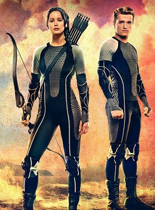

Hunger Games

Rövid történet
A nem túl távoli jövőben Amerika már a múlté, a helyén Panem országa található az azt irányító zsarnoki Kapitóliummal és tizenkét távoli körzetével.
A történet közzéppontjában Katniss Everdeen áll, aki a 12-es körzetben él anyukájával és húgával, Primmel, apja korábban egy bányakatasztrófában meghalt.
Van egy közeli barátja, Gale, akivel közösen vadásznak az erdőben, és kereskednek a levadászott állatokkal.
Minden évben megrendezésre kerül az 'Éhezők Viadala' ahol 12-18 év közötti fiút és lányt választanak minden körzetből, hogy élet-halál harcot vívjanak egy arénában.
Amikor Primet húzzák ki, Katniss önként jelentkezik helyette. A másik kiválasztott Peetah Mellark, a helyi pék fia.
Katniss ezután elbúcsúzik családjától és Gale-től, majd felszáll a vonatra, ami a Kapitóliumba viszi a két kiválasztottat.
Útközben megismerkednek leendő mentorukkal, Haymitch-csel, aki a tizenkettedik körzet egyedüli bajnoka.
Szereplők
Katniss Everdeen: Makacs, nagy igazságérzetű, önzetlen lány, aki nem barátkozik könnyen, de az Arénában összebarátkozik Rue-val, akit megölnek,
és Katniss önzetlen megmozdulása miatt kitör a forradalom a körzetekben; nem akarnak több Viadalt.
Ő egy jelképpé válik, később az emberek már csak úgy emlegetik, "a poszáta".

Színészek
Jennifer Lawrence - Katniss Everdeen
Josh Hutcherson - Peetah Mellark
Woody Harrelson - Haymitch Abernathy, mentor
Willow Shields - Primrose Everdeen
Liam Hemsworth - Gale Hawthorne
Elizabeth Banks - Effie Trinket
Lenny Kravitz - Cinna, Katniss stylist-ja
Donald Sutherland - Snow elnök, Kapitólium vezetője
Stanley Tucci - Caesar Flickerman, műsorvezető
Wes Bentley - Seneca Crane, játékmester
